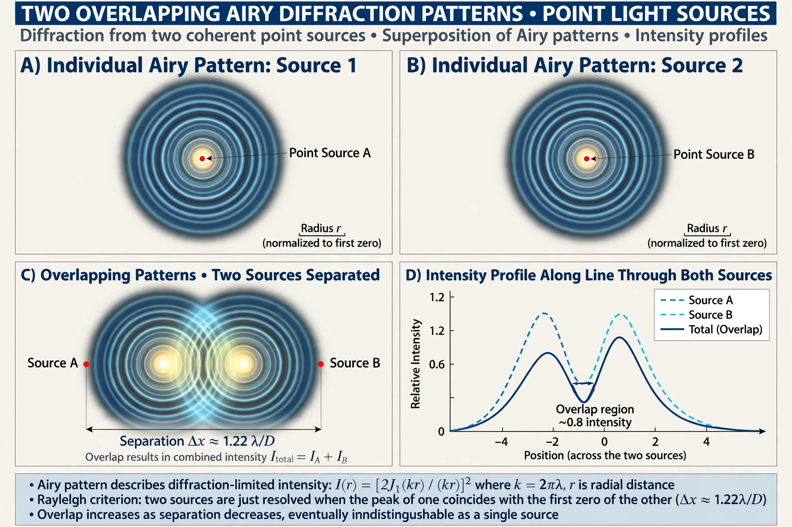

Optical resolution

Optical resolution describes the ability of an imaging system — such as a microscope, telescope or camera lens — to distinguish small details of an object and is a major factor in image quality. It is the distance between two distinguishable radiating points.
Diffraction limit
Because light is a wave, the image of a point source formed by a lens is not a point but a diffraction pattern — the Airy pattern — whose size grows as the aperture shrinks. According to the Rayleigh criterion, two points are just resolvable when the centre of one Airy pattern falls on the first minimum of the other, giving a minimum angular separation of approximately θ = 1.22 λ/D, where λ is the wavelength and D the aperture diameter.
Measures and testing
Resolution is often measured in line pairs per millimetre using standard test charts (such as the USAF 1951 resolution test chart), or described by the modulation transfer function (MTF) of the system. Aberrations, sensor pixel size (sampling, Nyquist criterion) and atmospheric seeing can all reduce the resolution actually achieved below the diffraction limit.
Super-resolution
Techniques such as structured illumination, STED and single-molecule localisation microscopy bypass the classical diffraction limit for fluorescence imaging, work recognised by the 2014 Nobel Prize in Chemistry.